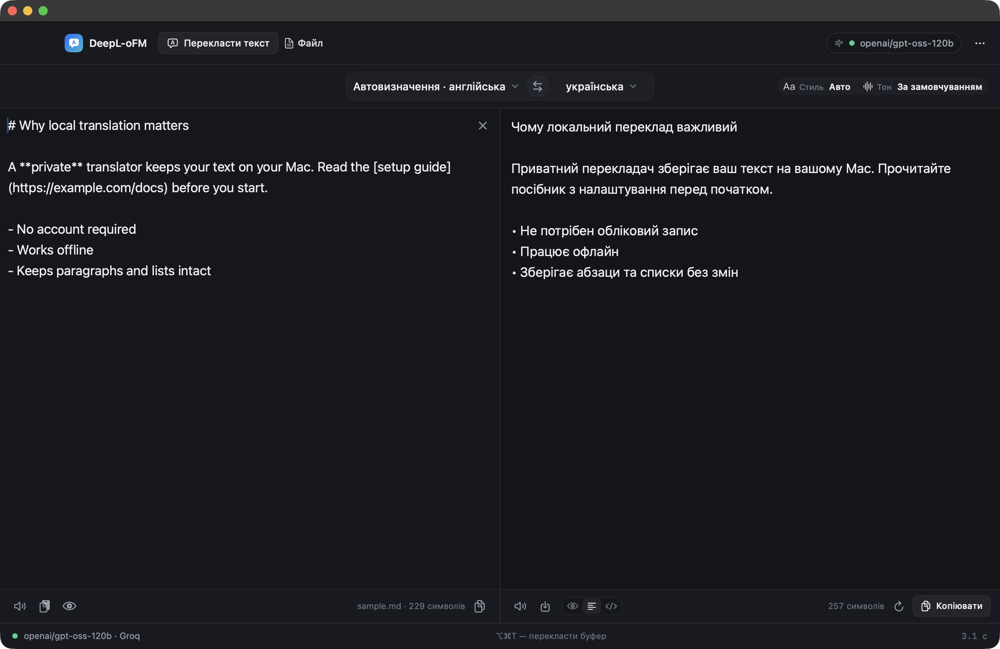
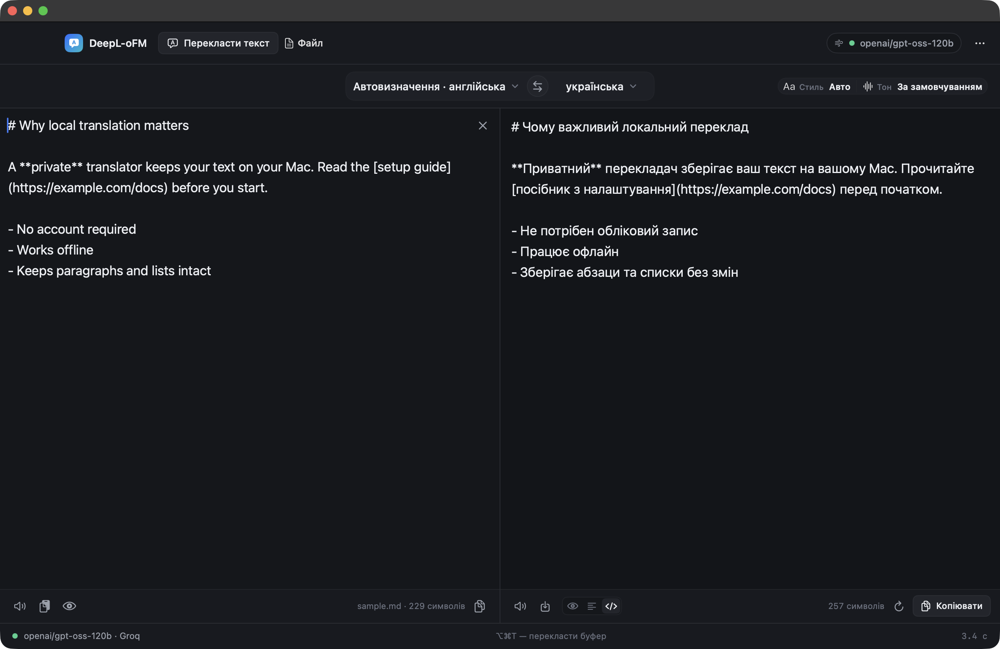
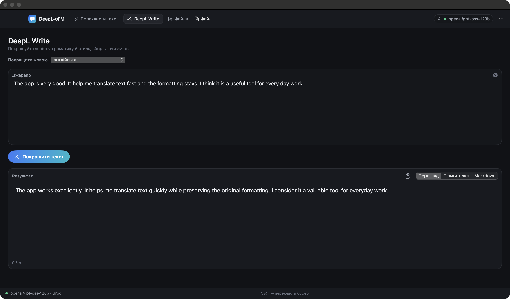
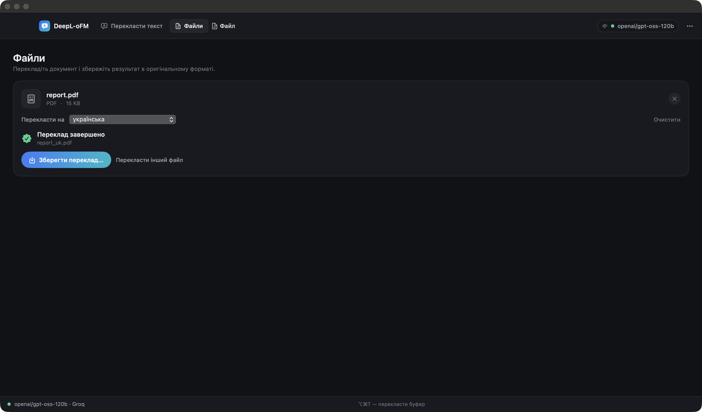
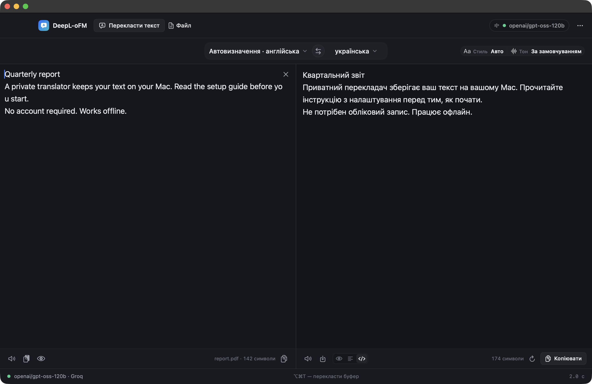

The paragraph can stay on the Mac
The model people usually put on the Mac is Hy-MT2 7B, about 4.6 GB, through Ollama. Once that download is done, a translation does not have to leave the machine.
Текст лишається на твоєму Mac.
These hellos are already written, so the board flips without waiting for a model. Your own text is what the app translates.
You got used to your words on one side and the translation on the other. You can drop the subscription. You do not have to drop that window. DeepL-oFM is a free app for the Mac, and it is a different program from DeepL. There is no account.
If you were simply looking for a translator, the difference is practical. Your paragraph can stay on this Mac, and a translation can finish with the internet off. A translator in the browser sends the paragraph to someone else's server as soon as you paste it. Here the paragraph leaves the computer only when you choose a service you already have a key for.
Free, and signed. It needs macOS 14 or later on Apple silicon, and you do not create an account.

While it works you see both sides and a percentage. Copy shows up once every line is done. In Settings you pick where the text goes, and you can name a second place to try if the first one stays quiet.
The model people usually put on the Mac is Hy-MT2 7B, about 4.6 GB, through Ollama. Once that download is done, a translation does not have to leave the machine.
A Word file stays a Word file: the app changes the words inside it and leaves the layout around them. A PDF that already contains text gets the translation drawn on those same pages. A scan is a photograph of paper, so run text recognition before you ask for a translation.
If you are in the middle of a mail, ⌥⌘T translates whatever you just copied. ⌥⌘C takes the sentence you highlighted in that other app and opens DeepL-oFM with it. macOS only allows the second shortcut after you grant Accessibility.







Markdown, a plain paragraph, the source behind it, a PDF, and Settings. This is the app running, filmed, not a picture drawn for the website.

The board above can flip on its own. This film is the same idea, ten seconds, with the sound left off.
The hellos were written ahead of time. A model did not produce them while you watched.
Before the first offline translation, Ollama has to store the model. These two lines do that.
ollama pull maternion/hy-mt2:7b ollama cp maternion/hy-mt2:7b hy-mt2:7b
There is an iPhone project in the repository. The button on this page downloads the Mac app. That build is not in the App Store.
If your work depends on a term list the whole company shares, or on a tool that remembers every approved sentence, this app will not replace that. Take it when you want a Mac window, a model that can stay on the machine, and no account.
The same guide exists in nine languages. The privacy page is written in English only.
There is no account and no analytics, so a translation does not come back to the project. A cloud service sees the text only when you choose that service and send the paragraph. Keys you type stay in the macOS Keychain.
A scan is a photograph of a page. Run text recognition first, then translate. A PDF that already has real text, and a Word file, keep their layout.
No. DeepL-oFM is a separate app, and it is not affiliated with DeepL SE. The name means a side-by-side window that can run on free models.